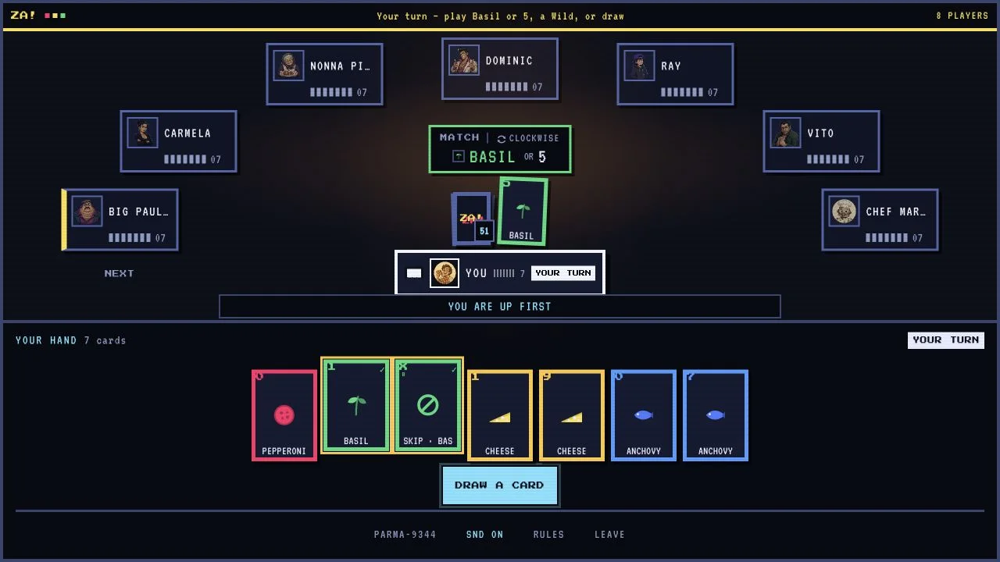
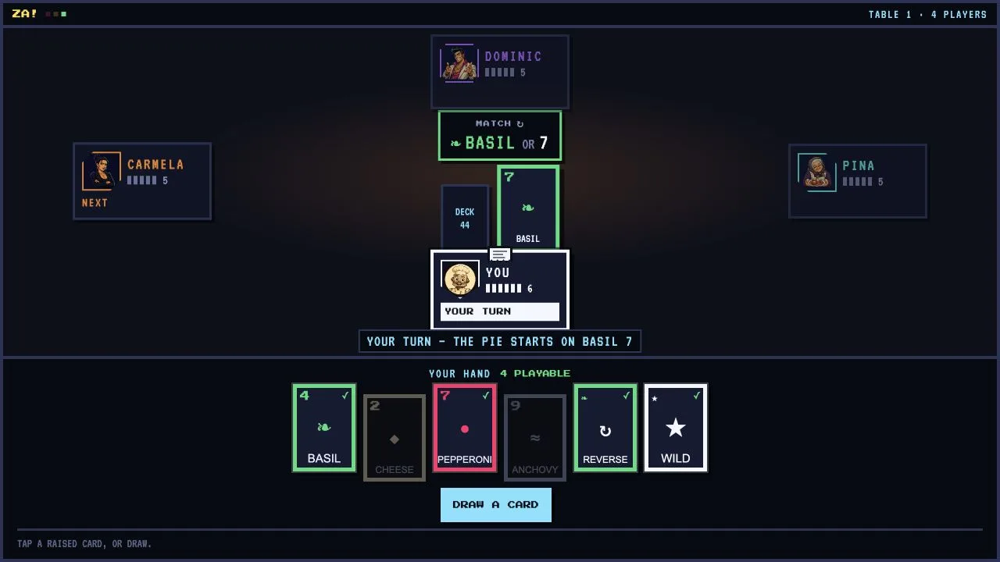
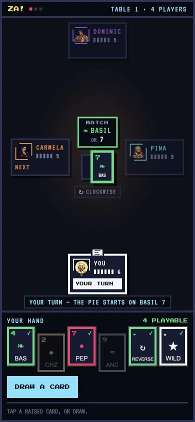
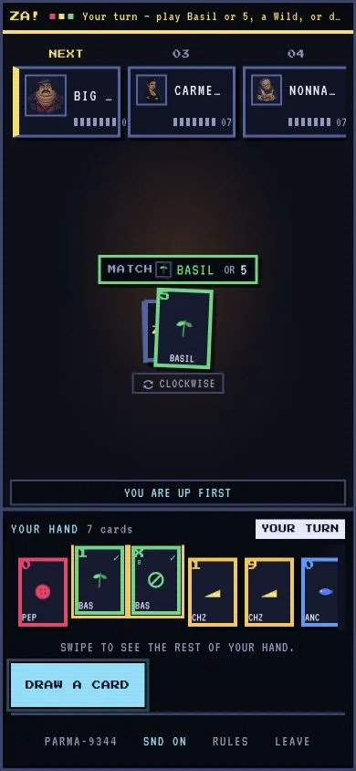
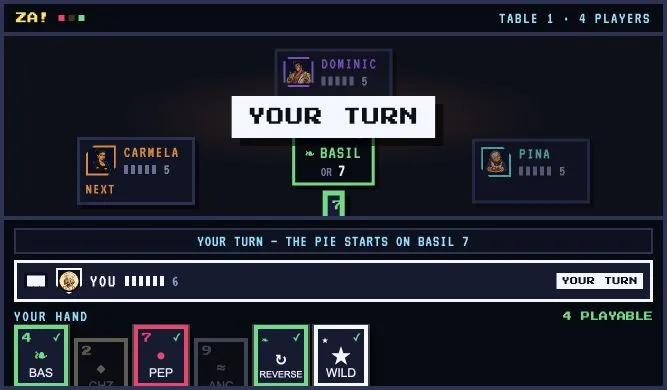
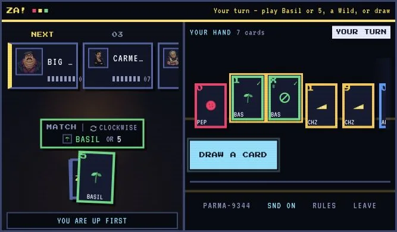
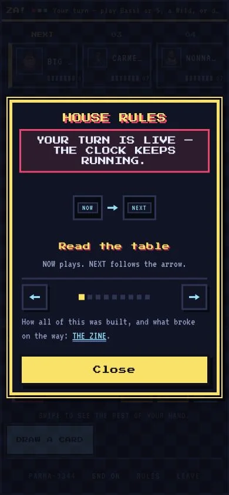

TABLE STORIES · ISSUE 01
THE TABLE LEARNED TO TALK
A good card table should answer the next question before anybody has to ask it. These are seven small stories about making ZA! clearer, fairer and happier on a phone.

Keep the fun on the table. Every label, button and animation has to earn the attention it takes.
HOW TO READ THE PICTURES
- THENThe saved game before this redesign.
- BLUEPRINTThe playtest system we chose.
- NOWThat system built into ZA’s vintage arcade table.

Who Has the Oven Mitt?Whose turn, what can I play, and who eats next?
The fastest card games do not feel fast because they hurry you. They feel fast because the table is readable in one glance.

THE OLD SHIFT
Turn, match and next-player clues lived in several places. Most turns were clear, but Skip and +2 could briefly tell a very convincing lie about who came next.
WHAT PLAYERS TAUGHT US
A newcomer should not need to understand the machinery. They only need three answers: who, what, and next.
TONIGHT’S TABLE
The marquee names the legal move, playable cards carry a check, and the travelling ticket follows the real destination. Color helps, but words and shapes still tell the story.
THE RECEIPT
Pass 9 fixed the false Skip/+2 destination and added a first-time-player script that asks eight comprehension questions without coaching. The deeper zine story is A roster is not a queue.
One Shout, One BellUrgency needs one obvious owner.
If the kitchen is on fire, ringing three bells does not make the warning clearer.


STORY DEMO · TWO CARDS
ZA is ready. Call it before playing again.
THE LESSON
One urgent moment gets one visible action. The button appears only when the rule allows it, and keyboard focus lands there when the hand reaches two cards.
THE PAYOFF
The shout still slams, flashes and feels like ZA!. It simply tells the truth now: ZA called, without pretend bonus points.
THE RECEIPT
Automated checks guard the single canonical control and reject fake score copy. Browser E2E verified the keyboard path from three cards to the urgent ZA button and safely back to the hand.
Seven Bots Heard You at OnceThe regulars learned to blink.
Vito used to catch a missed ZA like he had seven pairs of eyes. Suspicious.
EVERY REGULAR CHECKS AT ONCE
At a full bot table, the combined catch chance was 99.9757%. That is a rule on paper and a trap in a player’s hand.
THE TABLE APPOINTS ONE POSSIBLE OBSERVER
If chosen, one regular waits 900–1400ms. A real ZA shout cancels the catch before it lands.
TRY THE FAIR BEAT
THE RECEIPT
The server now runs one table-wide, personality-weighted observer lottery. Tests cover the delay, cancellation, target changes and the rule that adding bots must never multiply the catch.
Eight Chefs, One PhoneThe furniture learned to fold.
The table did not need fewer friends. It needed a shape that could change without changing the game.


THE LESSON
Shrinking every object would make names, cards and targets harder to use. The stronger move was to keep their size and change the seating pattern.
THE PATTERN
Portrait and a full short-landscape table now use the same ordered queue. A smaller table keeps the familiar counter. The user learns one grammar, not a special phone game.
THE RECEIPT
The converted table was visually checked from 320×640 and 390×844 through 568×320, 640×360, 667×390, 720×640, 721×640, 844×390 and 1024×560. Full compact tables kept the same ordered queue; smaller rooms kept their counter.
The Phone Had Two AnnouncersThe kitchen learned to whisper.
When the waiter, cook and receipt all announce the same card, nobody hears the card.
KITCHEN CHATTER
Big Paulie played Extra Toppings. Neek draws two.
TABLE NARRATION
EXTRA TOPPINGS — NEEK +2
Same event. Two visible strips. One small screen.
ONE VISIBLE EVENT
EXTRA TOPPINGS — NEEK +2
READ FULL TRANSCRIPT
The complete polite history still exists for assistive technology and larger screens.
THE LESSON
Important does not mean louder everywhere. One event gets one visible sentence on a phone.
THE INSPIRATION
From strong online card tables we kept the interaction economy: play area first, teaching near the hand, and extra chrome out of the way. ZA! keeps its own restaurant, people and shout.
THE RECEIPT
The phone breakpoint now hides the duplicate visual log while preserving the complete live narration. That removes a competing strip without removing information.
The Invisible ChairEvery player needs somewhere to land.
Keyboard focus is a player’s chair. A popup is not finished if it takes the chair away when it leaves.

FOLLOW THE CHAIR
Step 1 of 3: the urgent action receives focus.
THE OLD SHIFT
Closing a ZA warning, a call-out list or a reconnect state could leave a keyboard player focused on the empty page.
TONIGHT’S TABLE
Urgent choices receive focus once. Cancel and Escape return to the exact invoker. If that control disappears, the hand, Draw button or game table becomes the safe chair.
THE RECEIPT
Deterministic browser runs covered successful ZA, self-rescue, opponent call-out, multi-target Cancel/Escape, House Rules and round reconnect without focus falling onto the page body.
Two Slices Are Still in the OvenAn honest 18 beats a suspicious 20.
A score is useful when it names what remains, not when it crowns the work finished.
PLAYTEST AUDIT · 11 AUG 2026
12 → 18 / 20ACCESSIBILITY2 → 3
Live feedback, truthful focus, readable contrast and real keyboard controls. One point remains for physical-device assistive-technology testing.
PERFORMANCE3 → 4
Offline assets, no image fallback failures and frame-batched hand work.
RESPONSIVE2 → 4
Portrait, short landscape, safe overflow, 320px reflow and visible-viewport handling.
THEMING1 → 3
Meaningful surface, text, suit, warning, danger and success roles. One point remains for production-wide token maturity.
VISUAL INTEGRITY4 → 4
The pixel-arcade hierarchy and ZA! personality stayed intact through the repairs.
Important: 18/20 is the dated score for the playtest prototype, not a WCAG certificate and not a made-up production score. The current game has separate proof: 66 automated checks, responsive browser journeys, and a fresh review whose two major findings were corrected before these pictures were captured.
WHAT CHANGED
The work moved from “add more explanation” to “make every state tell one consistent truth.” That reduced clutter and improved accessibility at the same time.
WHAT REMAINS
One slice is real iOS VoiceOver, Android TalkBack, physical thumbs and first-time players. The other is final cross-device verification of the live Pass-9 table and production-wide token maturity. A prototype cannot award itself either one.
THE RECEIPT
The 12/20 → 18/20 figures come from the documented Pass 9 prototype audit. Production’s 66 checks are automated rule and integration checks, not 66 player tests.